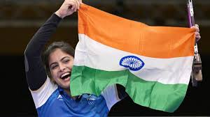
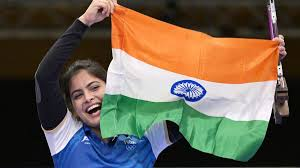

In a thrilling display of skill and determination, Manu Bhaker has secured a bronze medal at the 2024 Paris Olympics. This remarkable
achievement adds another feather to her already illustrious cap and brings immense pride to India.
Manu Bhaker’s journey to the Paris Olympics was marked by rigorous training, unwavering dedication, and an unyielding spirit.
From her early days in Jhajjar, Haryana, to standing on the Olympic podium, Bhaker's story is one of perseverance and passion.
The women's 10m air pistol event at the Paris Olympics was a highly competitive affair, with the world's best shooters vying for the top
spots. Bhaker, known for her calm demeanor and precise aim, showcased her exceptional talent throughout the competition.
Her performance was a masterclass in focus and technique, as she consistently hit the target with remarkable accuracy.
In the final round, the tension was palpable. Bhaker maintained her composure and delivered a series of impressive shots that
secured her a spot on the podium. Her bronze medal victory was a testament to her hard work and the hours of practice she had
put in leading up to the Games.
In an emotional interview after her victory, Bhaker expressed her gratitude to her coaches, family, and supporters. She dedicated
her medal to her country and emphasized the importance of perseverance and dedication in achieving one's goals.
Bhaker's bronze
medal win is expected to have a ripple effect on the sport of shooting in India. It will likely encourage more young people to take up the
sport and pursue it with the same passion and dedication that Bhaker has demonstrated.
Congratulations to Manu Bhaker on her incredible achievement, and here's to many more successes in the years to come!

 
